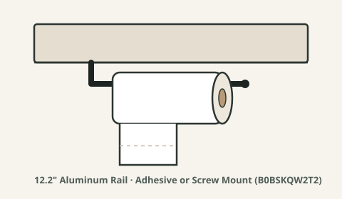
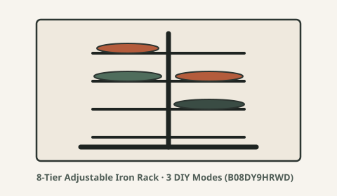

Kitchen & Storage Upgrades
Link Check: Pending Report
niffgaff Under-Cabinet Paper Towel Holder (Matte Black Aluminum)
A lightweight 12.2-inch aluminum paper towel bar that clears countertop clutter by mounting under cabinets or on walls with either adhesive backing or screws.
- Brand: niffgaff · Observed ASIN:
B0BSKQW2T2
- Model Number: TN2200-BLK-NA 01
- Part Number: TN2200
- Material: Aluminum
- Color Variants: Black, Gold, White
Best for: Renters or small-kitchen setups wanting a no-drill under-cabinet option, or homeowners wanting a screw-mounted roll holder in matte black, gold, or white.

Kitchen & Storage Upgrades
Link Check: Pending Report
ORDORA 8-Tier Adjustable Pots and Pans Organizer (16.6" Light-Duty)
A tool-free 8-tier iron pan rack that can be assembled vertically on one or both sides or horizontally on one side to fit inside standard base cabinets or on countertops.
- Brand: ORDORA · Observed ASIN:
B08DY9HRWD
- Model Number: ODR8Tier
- Upc: 655100721821
- Material: Iron (plastic-dipped anti-slip dividers)
- Style Name: M-16.61"H-LightDuty
Best for: Lightweight everyday skillets, lids, and baking sheets where stacking causes scratching and cabinet digging.